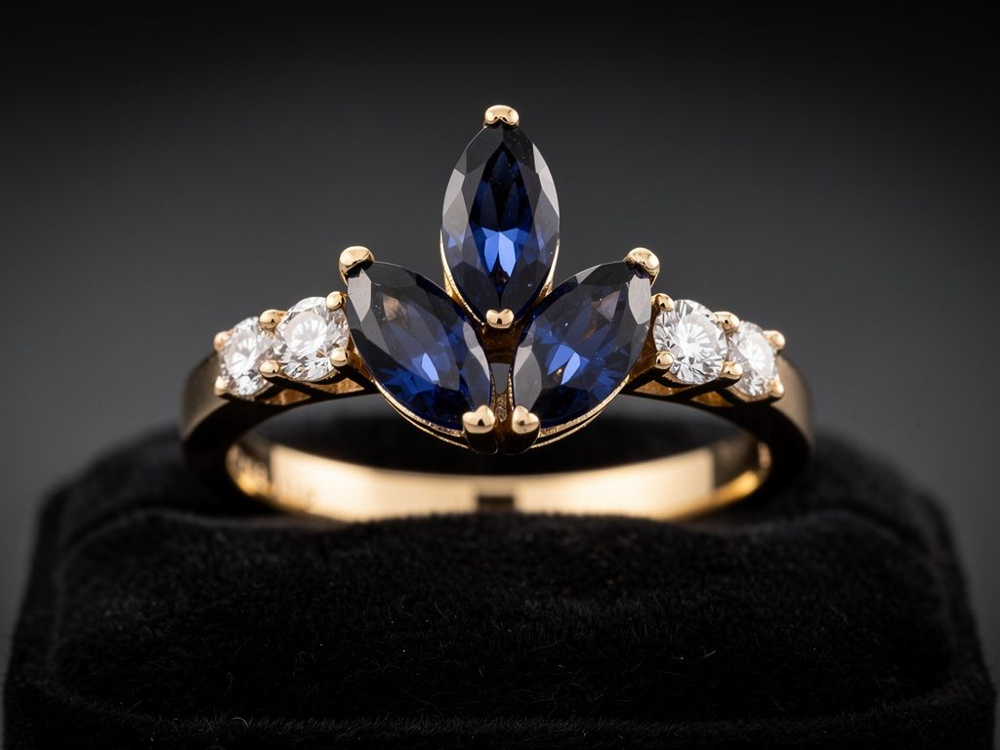

The Heirloom Echo
Her familiar silhouette, with room for a new life.
The thought behind it
The three-sapphire fan preserves the gesture of her 1950s swirl. Fine prongs keep the marquise outlines open and distinct, while the four diamonds divide into two on each shoulder for balance. A bezel would draw a stronger metal outline; prongs keep this version airy and close to the original. Protective tips belong in the final setting plan.